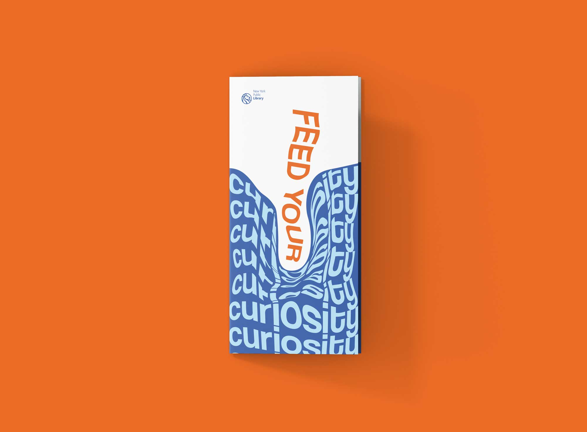

Feed Your Curiosity is a trifold flyer design for the New York Public Library. I wanted to use bold colours accompanied by strong typography and visual elements to create movement and activate the words within the title.

The Brewtal Truth is a beer brand for politicans. Inspired by the 2016 US elections, I wanted to create a logo with strong symbolism, combining contemporary and traditional design.